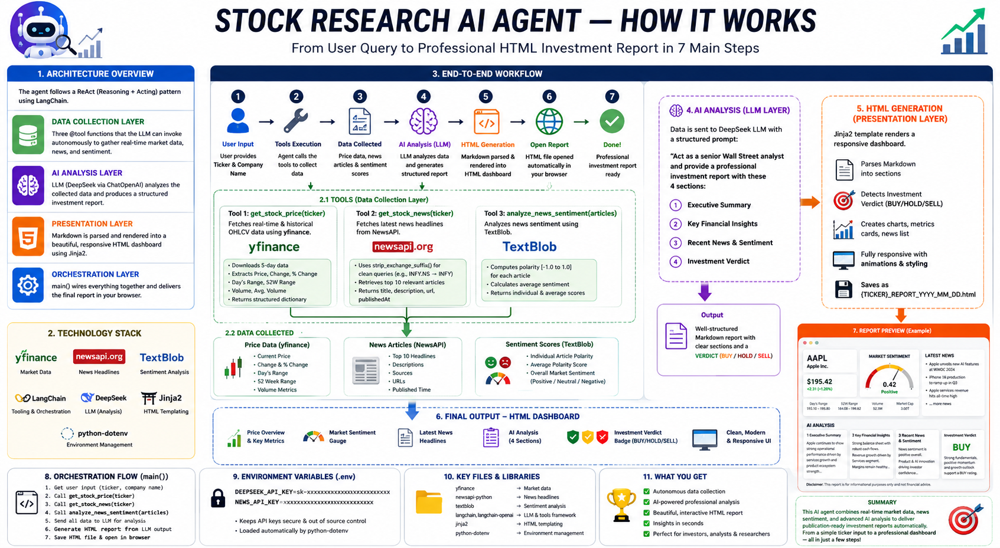

An autonomous stock research pipeline that fetches real-time market data via Yahoo Finance, aggregates financial news from NewsAPI, computes sentiment with TextBlob, and produces a professional HTML investment report powered by DeepSeek.

The agent follows a sequential pipeline with four distinct layers. Data is collected first, then passed to the LLM for structured analysis, then rendered into a self-contained HTML dashboard — no agentic loop, no dynamic tool selection.
Three @tool-decorated functions that gather raw market intelligence: OHLCV prices from Yahoo Finance, latest headlines from NewsAPI, and aggregate sentiment via TextBlob polarity scoring.
generate_analysis() sends all collected data to DeepSeek with a structured prompt instructing it to role-play as a senior Wall Street analyst and produce four mandatory markdown sections.
generate_html_report() parses the LLM's markdown into structured sections, detects the BUY / HOLD / SELL verdict, and renders a responsive HTML dashboard using an inline Jinja2 template with embedded CSS and JavaScript.
Each @tool-decorated function is an independent data-gathering capability. In this pipeline, they are invoked sequentially by main(), not dynamically by an LLM agent. Click each card to expand implementation details.
Fetches OHLCV data from Yahoo Finance via yfinance. Tries multiple exchange suffixes (.NS → .BO → raw) to locate the stock across Indian and global markets.
| Input | ticker: str — e.g. "INFY", "AAPL" |
|---|---|
| Output | Dict with ticker, exchange, current_price, open, high, low, volume |
| Exchange resolution | Attempts .NS (NSE) first, then .BO (BSE), then raw ticker for global markets |
| Data window | 5-day history to cover weekend/holiday gaps; uses most recent row |
| Error handling | Returns {"error": "..."} if no data found or API fails |
Queries NewsAPI's /v2/everything endpoint for the 5 most recent English-language articles matching the company name plus "stock".
| Input | company_name: str — full company name, not ticker (e.g. "Tata Consultancy Services") |
|---|---|
| Output | List of dicts with title, description, url |
| Search query | "{company_name} stock" to bias toward financial coverage |
| Page size | 5 articles — keeps the report focused and LLM context lean |
| API tier | NewsAPI free tier (100 req/day, articles up to 30 days old) |
Fetches up to 20 articles from NewsAPI and computes aggregate polarity using TextBlob's lexicon-based sentiment analyzer. Classifies as Positive, Negative, or Neutral.
| Input | company_name: str — full company name for NewsAPI search |
|---|---|
| Sample size | Up to 20 articles for statistically meaningful aggregation |
| Engine | TextBlob — lexicon-based (fast, no API key, no GPU needed) |
| Thresholds | Score > +0.15 → Positive | < −0.15 → Negative | otherwise → Neutral |
| Output | sentiment, score (rounded to 2 dp), articles_analyzed |
How the collected data is transformed into a DeepSeek-powered analysis and rendered into a polished HTML dashboard.
All collected data (price, sentiment, news) is injected into a single structured prompt sent to DeepSeek. The prompt enforces strict output formatting to ensure reliable downstream parsing.
You are a senior Wall Street analyst. Analyze this stock. Ticker: {ticker} Stock Data: {stock_data} Sentiment: {sentiment_data} News: {news} ## 📊 Financial Outlook ## ⚠️ Key Risks ## 🚀 Growth Potential ## 🎯 Investment Recommendation (wrap key sentences in <mark> tags — THIS SECTION ONLY)
| Model | deepseek-chat via langchain-openai (ChatOpenAI wrapper) |
|---|---|
| Temperature | 0 — deterministic for factual consistency |
| Base URL | https://api.deepseek.com |
| Key constraint | No preamble before first header; <mark> only in Recommendation section |
The presentation engine operates in three stages: parse the LLM markdown, render via Jinja2, and write a self-contained HTML file.
| Stage | What happens |
|---|---|
| 1. Parse | Splits the LLM output on ## headers, matches each section to a known map (Financial Outlook, Key Risks, Growth Potential, Investment Recommendation), extracts paragraphs, and detects the BUY / HOLD / SELL verdict via keyword scanning. |
| 2. Render | Injects all data into a Jinja2 template with responsive CSS grid, animated sentiment bar, color-coded recommendation badges, staggered fade-up animations, and volume formatting JS. |
| 3. Write | Saves as {CLEAN_TICKER}_REPORT_{YYYY_MM_DD}.html (exchange suffix stripped) with UTF-8 encoding. |
generate_html_report(). This makes the report truly self-contained with no external CSS/JS dependencies beyond Google Fonts.python stock_react_agent.py — enters ticker symbol and full company nameget_stock_price.invoke(ticker) — tries .NS, .BO, then raw ticker via yfinanceget_stock_news.invoke(company_name) — fetches 5 latest headlines from NewsAPIanalyze_news_sentiment.invoke(company_name) — 20 articles, TextBlob polarity, aggregate score.html file, opens it in the default browserGet the pipeline running in under 5 minutes.
Create a .env file in the project root with your API keys:
Loaded automatically by python-dotenv at startup. Keeps keys out of source control.
All dependencies are pinned in requirements.txt:
| Package | Purpose |
|---|---|
yfinance | Yahoo Finance OHLCV data |
newsapi-python | NewsAPI headlines |
textblob | Lexicon-based sentiment analysis |
langchain + langchain-openai | @tool decorator + ChatOpenAI wrapper for DeepSeek |
jinja2 | HTML templating engine |
python-dotenv | Load .env file |
The script will fetch data, call DeepSeek for analysis, generate an HTML report, and automatically open it in your default browser.
.NS and .BO suffixes) and global stocks (NYSE, NASDAQ, LSE — raw ticker). Ticker symbols are case-insensitive.The full stock_react_agent.py with syntax highlighting. Click Copy to copy the entire file to your clipboard.